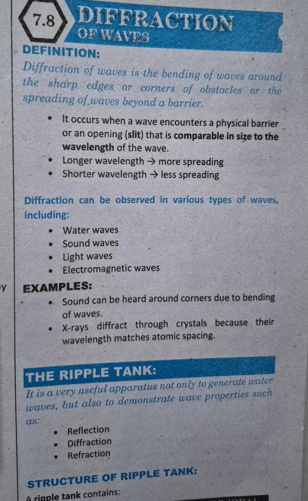

7.8 Diffraction of Waves
Textbook §7.8 · Definition · Conditions · Wave Types & Examples
TEXTBOOK · § 7.8
DEFINITION
Diffraction of waves is the bending of waves around the sharp edges or
corners of obstacles or the spreading of waves beyond a barrier.
• Occurs when a wave encounters a barrier or opening (slit) that is comparable in size to the wavelength (d ≈
λ).
• Longer Wavelength (λ) →
More spreading / significant diffraction.
• Shorter Wavelength (λ) →
Less spreading / minor diffraction.
Observed in Various Wave Types
-
Water waves (bending around rocks / sea walls)
-
Sound waves (hearing around open doors and corners)
- Light waves (fringes through tiny pinholes)
-
Electromagnetic waves (X-rays diffracting through
crystal lattices)
EXAMPLES
1. Sound around corners: Long acoustic wavelengths
(meters) readily bend around doorframes and building walls.
2. X-ray crystallography: Extremely short X-ray
wavelengths match atomic lattice spacing in crystals, producing atomic
diffraction patterns.
THE RIPPLE TANK
A very useful laboratory apparatus not only to generate water waves,
but also to demonstrate fundamental wave properties:
1. Reflection
2. Diffraction
3. Refraction
Original Textbook Page

Add ch7_tb_p21.jpg next to this file